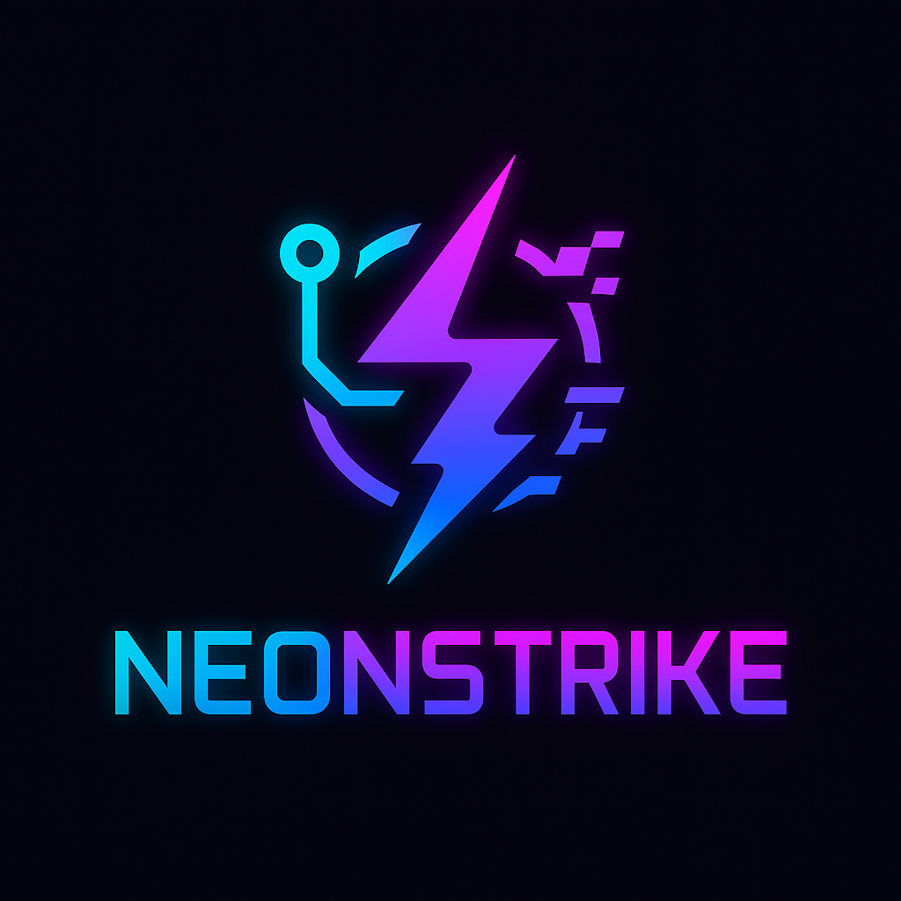

BORRAR TU CUENTA
Puedes borrar tu cuenta de NeonStrike2D y todos sus datos cuando quieras.
Desde el juego
- Inicia sesión y abre Opciones en el menú principal.
- Pulsa
DELETE ACCOUNTy vuelve a pulsar para confirmar.
La cuenta se borra al momento.
Sin el juego
Escribe a [email de contacto] desde el email de tu cuenta, con el asunto «Borrar cuenta» y tu nombre de usuario. La borraremos en un plazo máximo de [30] días y te confirmaremos el borrado.
Qué se borra
- Tu cuenta: nombre de usuario, email y contraseña cifrada.
- Tus partidas y puntuaciones (desapareces del ranking).
- Tus amistades y solicitudes de amistad.
No se conserva ningún dato. Después puedes crear otra cuenta con el mismo email.
DELETE YOUR ACCOUNT
You can delete your NeonStrike2D account and all its data at any time.
In the game
- Log in and open Options from the main menu.
- Tap
DELETE ACCOUNT, then tap again to confirm.
The account is deleted immediately.
Without the game
Email [email de contacto] from your account's email address, with the subject "Delete account" and your username. We will delete it within [30] days and confirm the deletion.
What is deleted
- Your account: username, email and hashed password.
- Your matches and scores (you are removed from the ranking).
- Your friendships and friend requests.
No data is kept. You can create a new account with the same email afterwards.